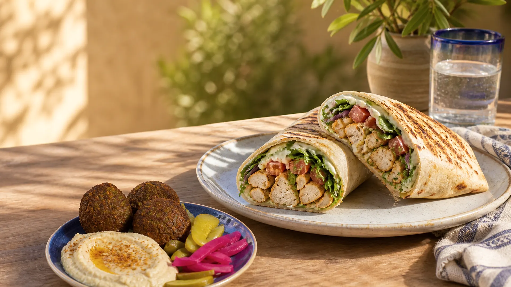
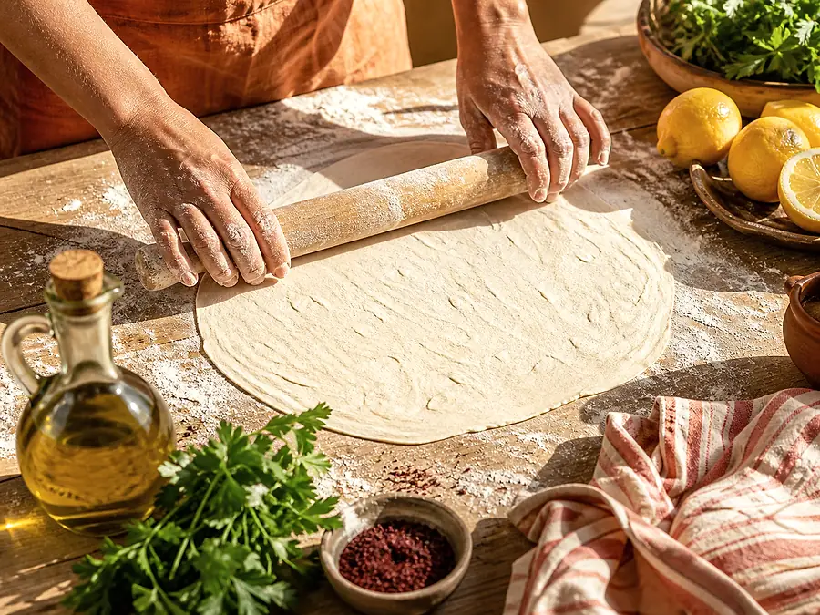
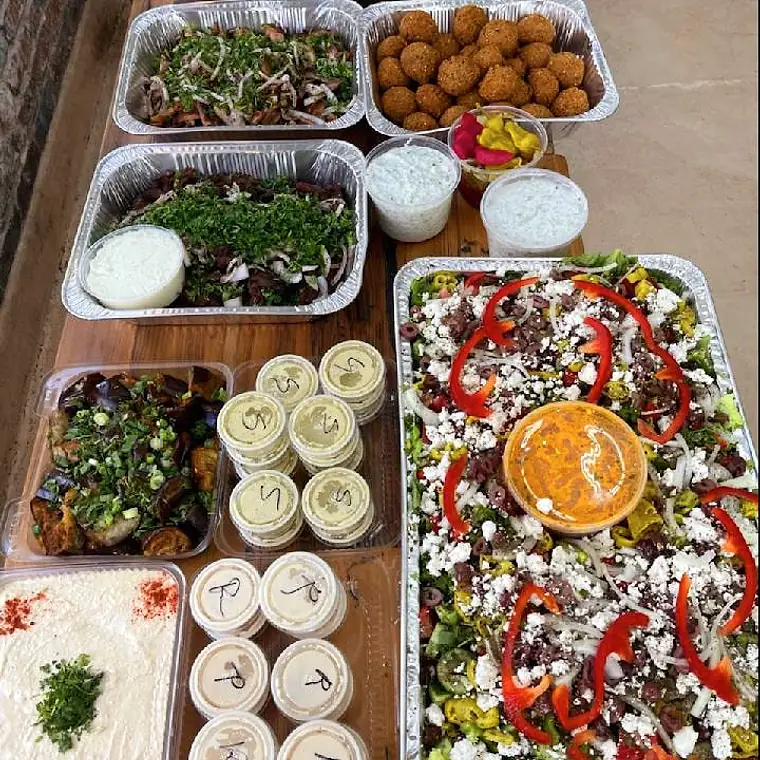

Chicken Shawerma Wrap
Seasoned chicken wrapped in soft lavash with fresh Mediterranean fillings.
$13.25
Old PasadenaSince 1984
Fresh Mediterranean wraps, plates and family recipes—made for lunch, dinner and everything in between.
Second-generation. Family-owned.
Father Nature has served authentic, healthy Mediterranean food since 1984. The idea stays simple: roll it fresh, fill it generously and make every meal feel easy.

From the bistro
Wraps for the walk. Plates for the table. Sides worth sharing.

Holiday hours may vary. Call the bistro if you are making a special trip.